Odin Kimdir? İskandinav Mitolojisinin Baş Tanrısının Gerçek Hikâyesi
Tek gözün bedelinden rünlere, Valhalla’dan Ragnarök’e: Edda metinleri ve tarihî eserlerle Odin’in gerçek hikâyesi.
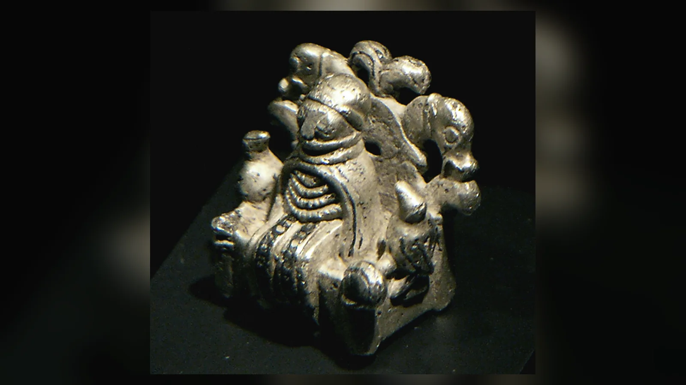
İskandinav MitolojisiTek gözün bedelinden rünlere, Valhalla’dan Ragnarök’e: Edda metinleri ve tarihî eserlerle Odin’in gerçek hikâyesi.
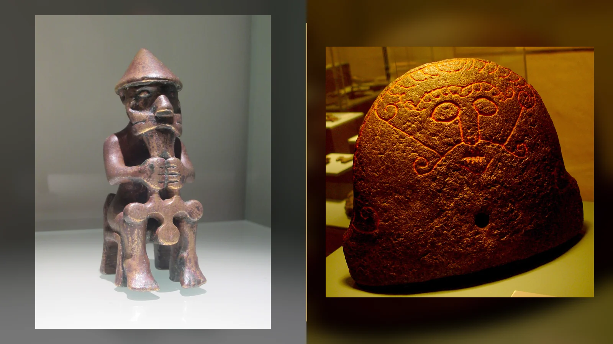
İskandinav MitolojisiGerçekte kardeşler mi? Mjölnir’in layıklık kuralından Hel ve Hela’ya, Edda metinleriyle Marvel’ın değiştirdiği ayrıntılar.
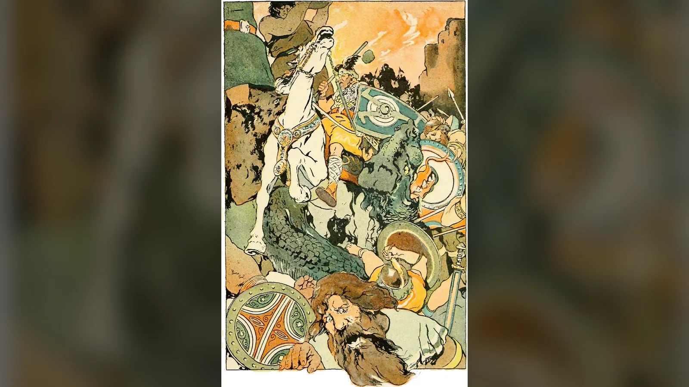
İskandinav MitolojisiTanrıların son savaşından yeni dünyanın doğuşuna; Odin, Thor, Loki, Fenrir ve Surtr’ın kaderini Edda kaynaklarıyla inceleyin.
 Bizans Tarihi
Bizans TarihiÜç Ayasofya’dan Justinianus’un kubbesine, Bizans mozaiklerinden Osmanlı müdahalelerine ve bugünkü kullanımına uzanan 1.500 yıllık hikâye.
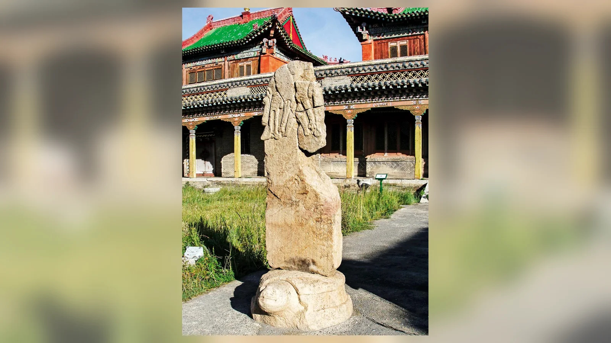
Türk MitolojisiÇin kaynaklarındaki dişi kurt anlatısı, Aşina hanedanı, kurt başlı sancak ve Ergenekon’dan ayrılan gerçek tarihsel katmanlar.
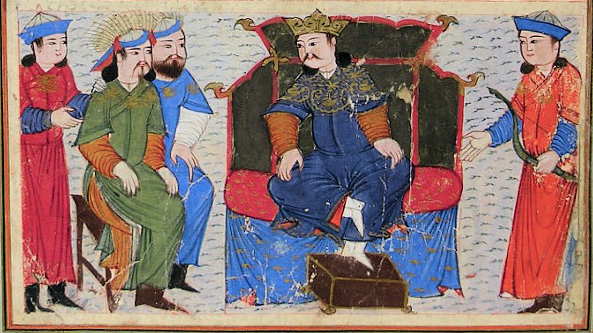
Türk MitolojisiDresden’deki on iki boydan Günbed’deki ejderha anlatısına: Hikâyelerin konuları, kahramanları, nüshaları ve ortak anlamları.
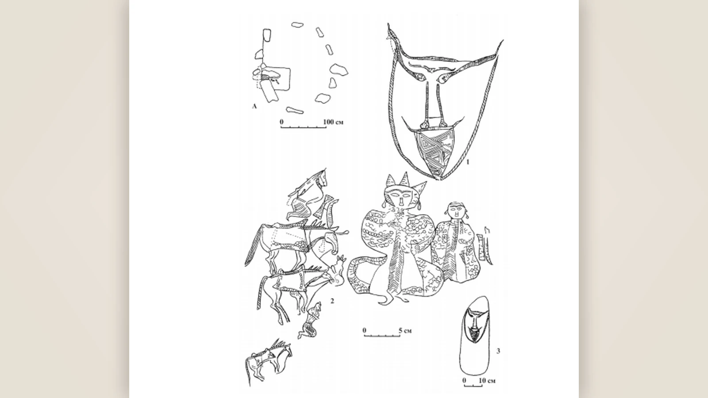
Türk MitolojisiOrhun Yazıtları ve Kaşgarlı Mahmud’dan çocuk koruyuculuğuna: Tarihsel Umay ile modern anlatıların ayrıldığı noktalar.
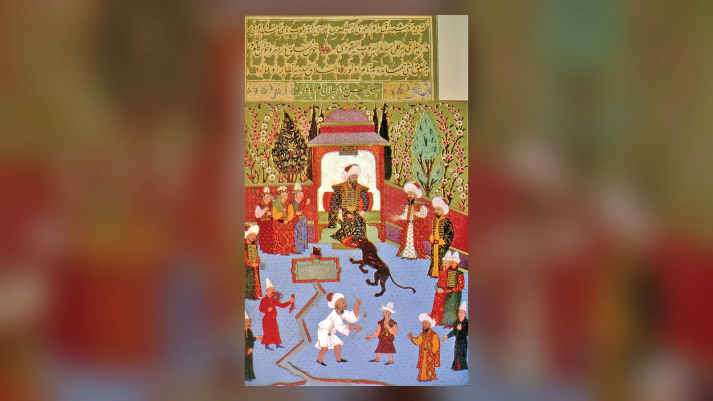
Osmanlı Tarihi1299–1302 tartışması, Kayı boyu, Bafeus Savaşı ve Osman'ın Rüyası üzerinden Osmanlı'nın gerçek kuruluş süreci.
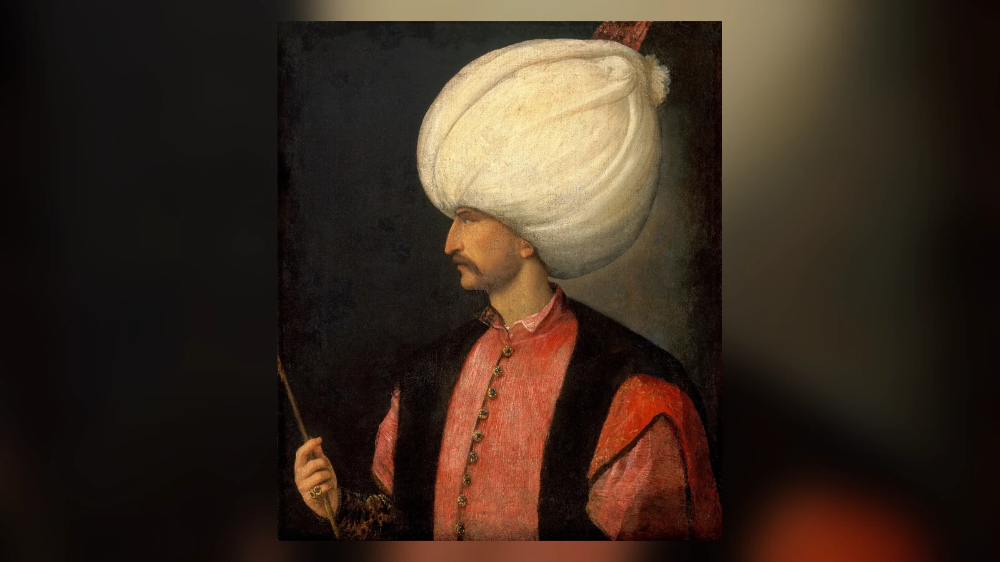
Osmanlı TarihiKanuni’nin seferleri, Hürrem Sultan, Şehzade Mustafa ve Muhteşem Yüzyıl dizisinin tarihsel gerçekleri.
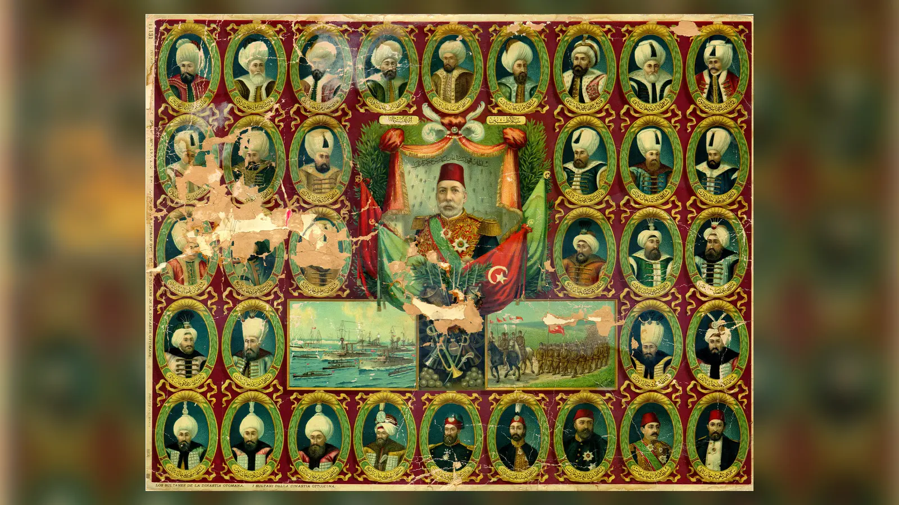
Osmanlı TarihiOsman Gazi’den Vahdeddin’e kronolojik liste, saltanat yılları ve 36 hükümdarın tahtı devralırken karşılaştığı hikâyeler.
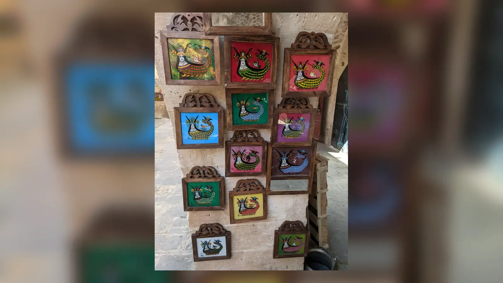
Türk MitolojisiKuyudaki ihanetten yılanlar ülkesine: Câmasbnâme’nin olay örgüsü, Tarsus ve Mardin anlatıları ile Şahmaran’ın bilgi ve şifa anlamı.
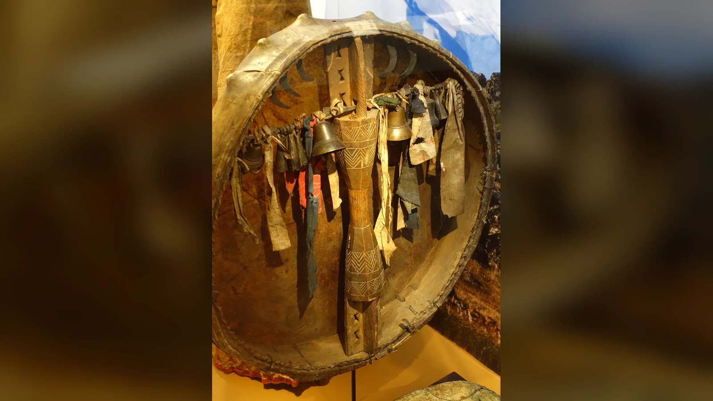
Türk MitolojisiAltay yaratılış anlatılarından kamların yeraltı yolculuğuna: Erlik’in gücü, Ülgen’le ilişkisi ve “Türklerin şeytanı” benzetmesinin sınırları.
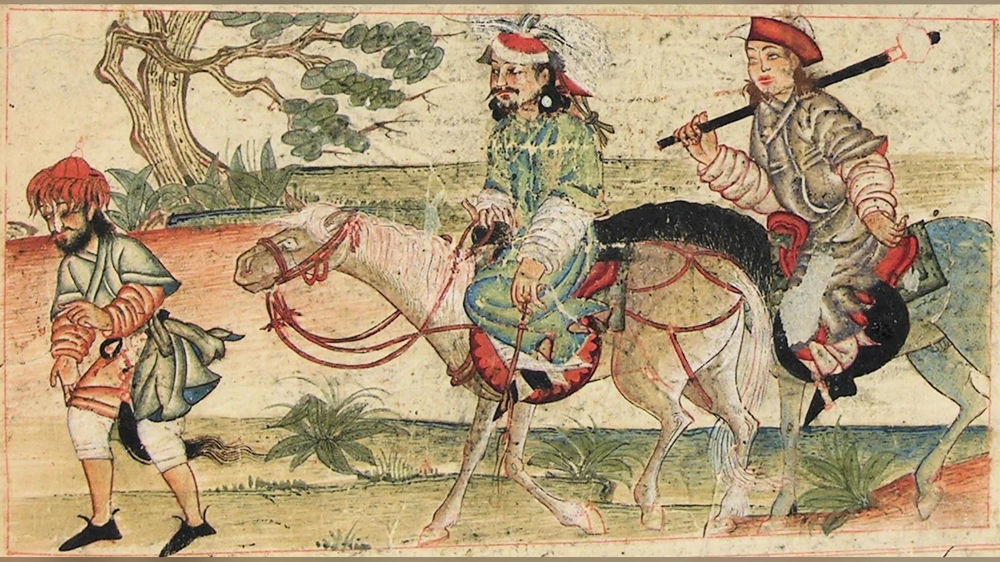
Türk MitolojisiGök kurdun kılavuzluğundan altın yayın paylaşılmasına: Oğuz’un seferleri, kahramanları, altı oğlu ve farklı metinlerde değişen hikâyesi.
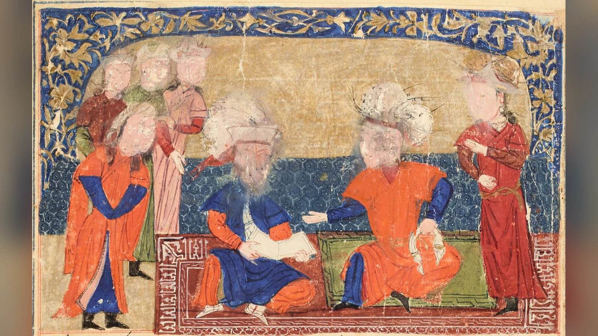
Türk MitolojisiYenilgiden sığınağa, demirli geçitten ata yurda: Ergenekon’un hikâyesi, eski kaynakları ve yeniden doğuş anlamı.
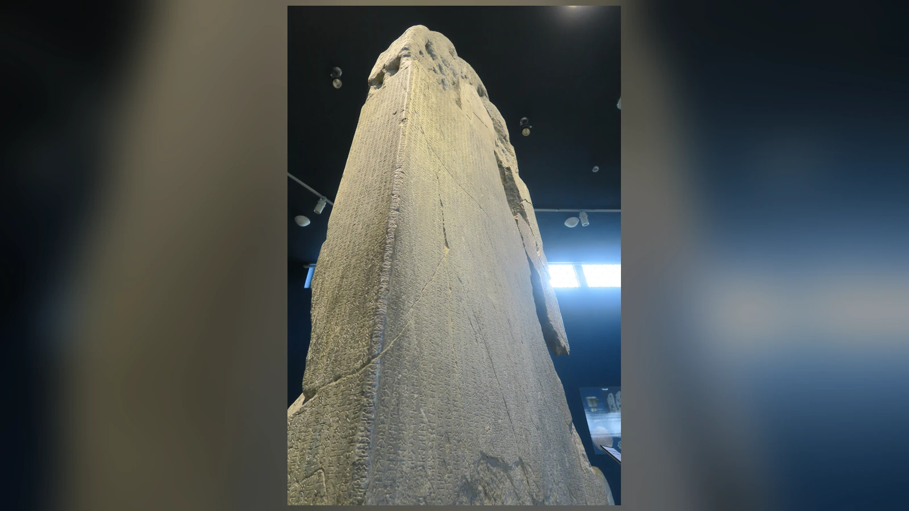
Türk MitolojisiOrhun yazıtlarından Irk Bitig’e: Tengri, kut, Umay ve eski Türklerin gök, yurt ve kutsallık arasında kurduğu bağ.
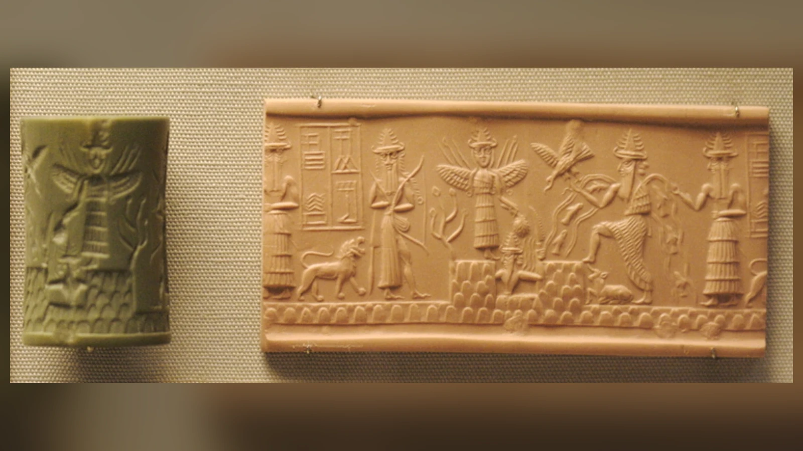
Mezopotamya MitolojisiUruk’un tanrıçası, yeraltının yedi kapısı, Dumuzi ve Gılgamış. İnanna ile İştar’ın aşk, savaş ve iktidarı bir araya getiren dünyası.
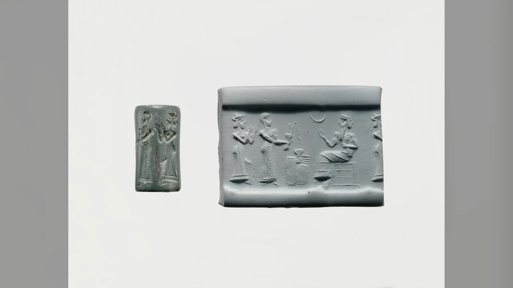
Mezopotamya MitolojisiAnunna ve İgigi, insanın yaratılışı, yeraltı yargıçları ve Nibiru. Antik tabletlerdeki tanrılar ile modern uzaylı iddialarının ayrıldığı noktalar.
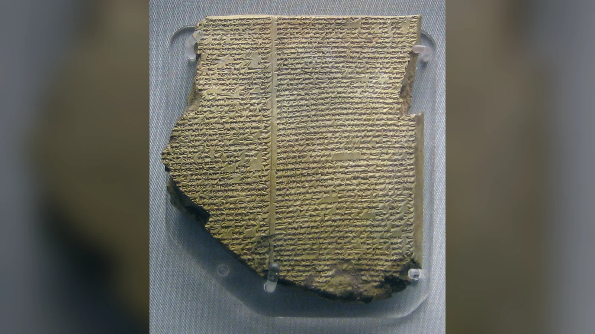
Mezopotamya MitolojisiGılgamış ile Enkidu’nun dostluğu, Sedir Ormanı yolculuğu, tufan anlatısı ve ölümsüzlük arayışı. Destanın gerçek tabletleri ve uzun yazılı geçmişi.
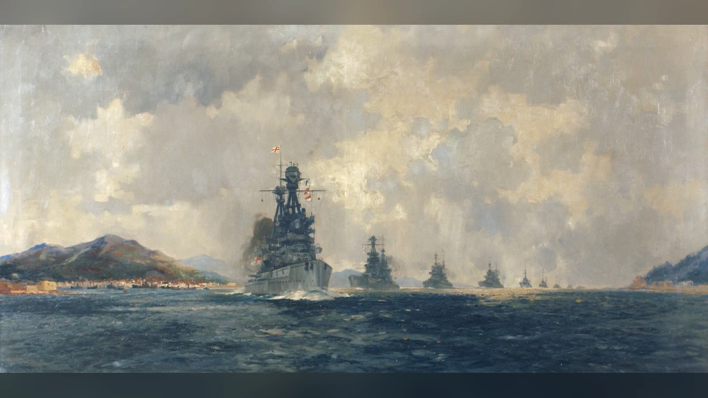
Osmanlı TarihiSavaşlar, borçlar, reformlar ve milliyetçi hareketler Osmanlı’nın sonunu nasıl hazırladı? 1918 yenilgisinden saltanatın kaldırılmasına uzanan süreç.
Pargalı İbrahim Paşa neden öldürüldü? Kanuni’nin güveni, Hürrem Sultan iddiaları, İskender Çelebi çatışması ve 1536’daki infazın arka planı.
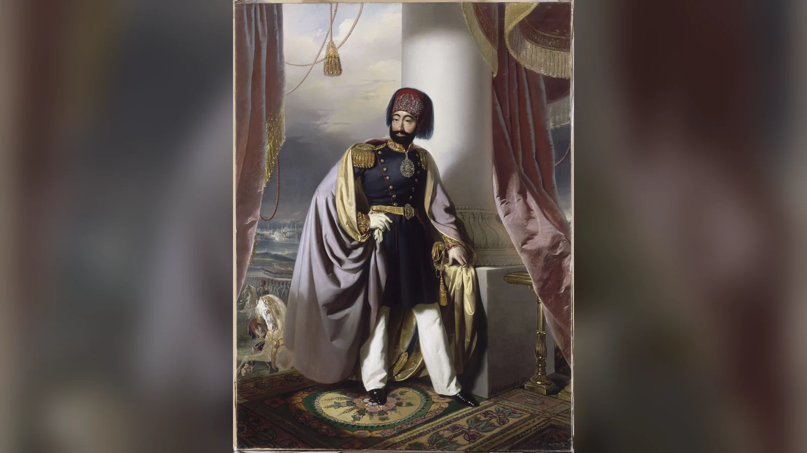
Osmanlı TarihiYeniçeriler neden kaldırıldı? II. Mahmud’un 1826’da Yeniçeri Ocağı’nı tasfiye etmesine yol açan askerî, siyasi ve toplumsal nedenleri inceleyin.
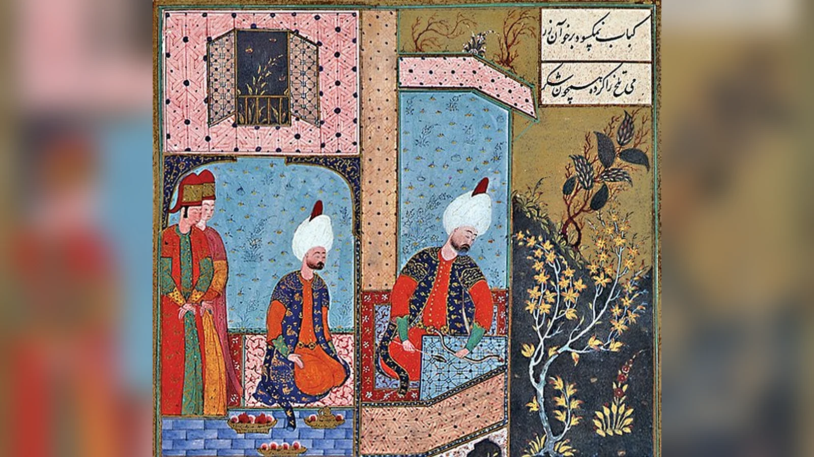
Osmanlı TarihiŞehzade Mustafa neden öldürüldü? Kanuni’nin 1553’te verdiği kararın ardındaki veraset rekabetini, Hürrem ve Rüstem iddialarını kaynaklarla inceleyin.
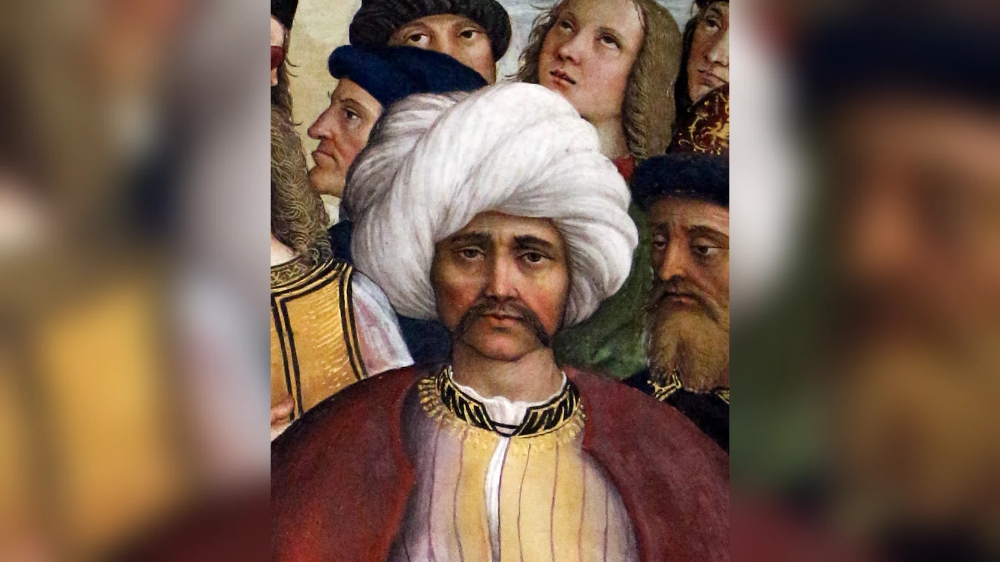
Osmanlı TarihiCem Sultan olayı nedir? II. Bayezid’le taht mücadelesinin Rodos, Fransa ve Papalık üzerinden nasıl uluslararası siyasi koza dönüştüğünü inceleyin.
 Osmanlı Tarihi
Osmanlı TarihiFatih Sultan Mehmed İstanbul'u nasıl fethetti? 1453 kuşatmasını surlar, toplar, Haliç, son hücum ve tartışmalı anlatılar üzerinden inceleyin.
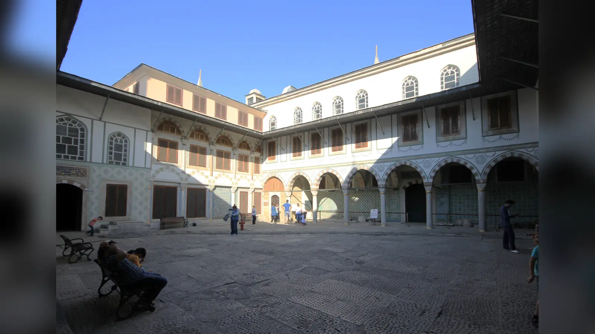
Osmanlı TarihiHarem-i Hümayun’un cariyelerden valide sultana uzanan düzenini, gündelik yaşamını, kölelik sistemini ve siyasi nüfuzun gerçek sınırlarını inceleyin.
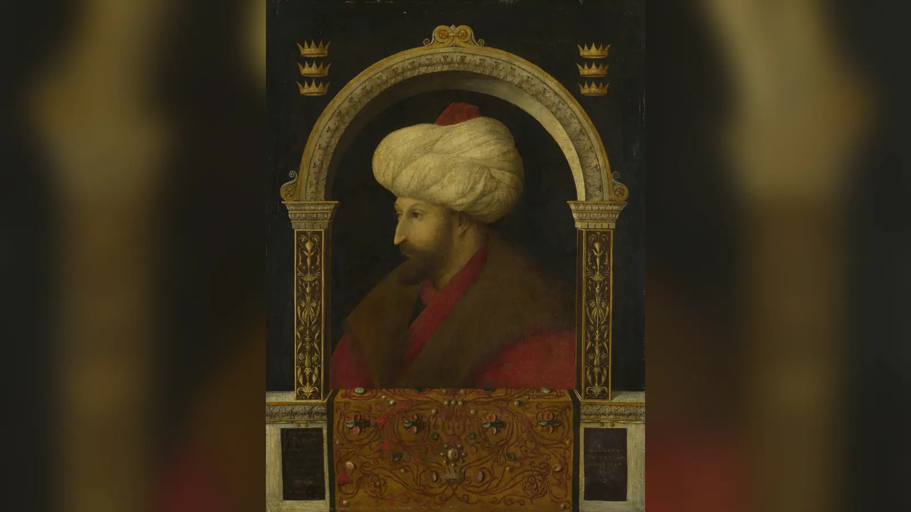
Osmanlı TarihiFatih Kanunnamesi’ndeki nizam-ı âlem hükmünü, şehzade infazlarını ve Osmanlı veraset sisteminin neden değiştiğini inceleyin.
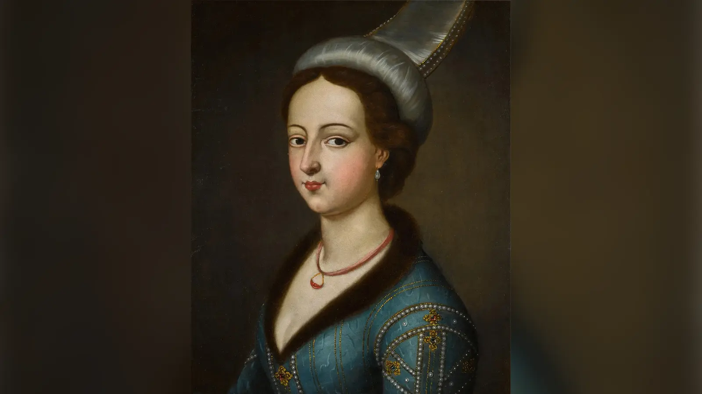
Osmanlı TarihiKösem Sultan’ın naipliğini, yeniçeri ve saray ağlarını, Turhan Sultan’la mücadelesini ve siyasi gücünün gerçek sınırlarını inceleyin.
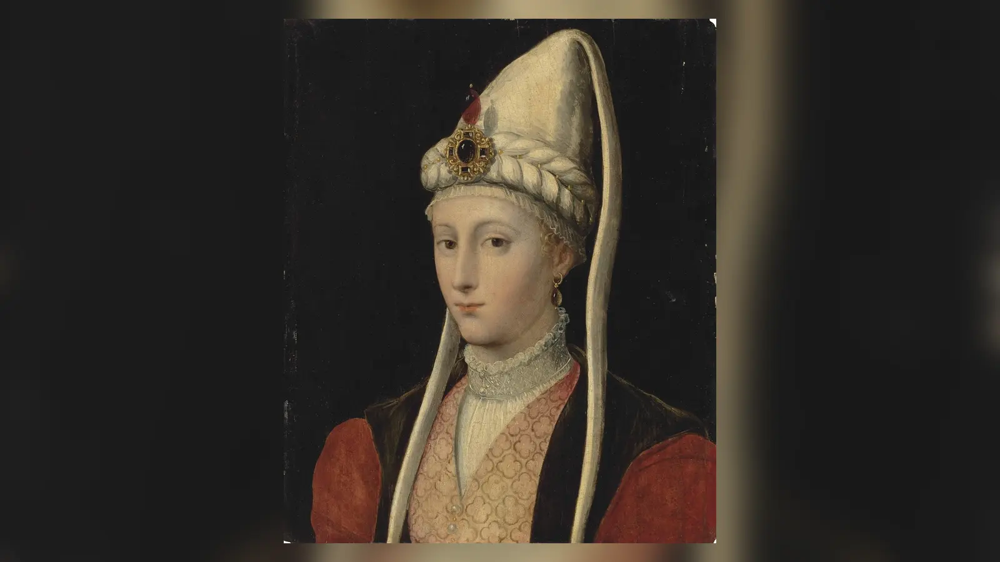
Osmanlı TarihiHürrem Sultan’ın Kanuni üzerindeki nüfuzunu, diplomatik yazışmalarını ve Osmanlı siyasetindeki gücünün gerçek sınırlarını kanıtlarla inceleyin.
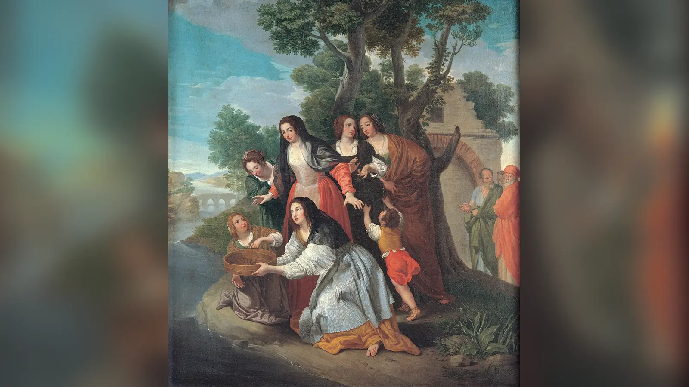
Roma TarihiRoma'nın kutsal ateşini koruyan Vesta rahibelerinin görevlerini, sıra dışı ayrıcalıklarını ve bekâret yeminini bozanlara verilen korkunç cezanın tarihsel gerçeğini keşfedin.
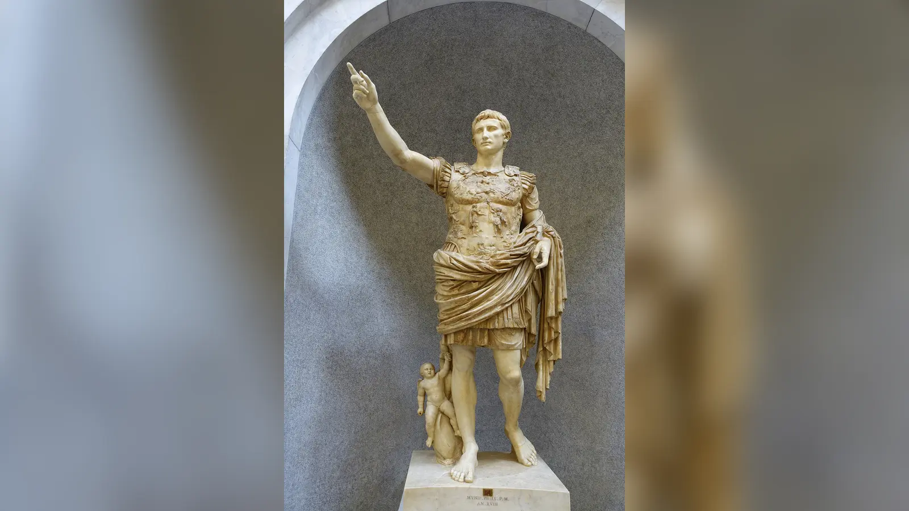
Roma TarihiAugustus, Cumhuriyet kurumlarını kaldırmadan Roma’nın ilk imparatoru hâline nasıl geldi? Octavianus’un iktidarını, reformlarını ve kurduğu Principatus düzenini inceleyin.
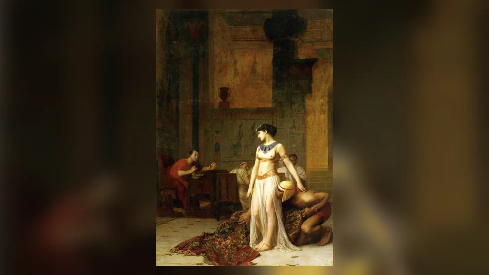
Roma TarihiSezar ve Kleopatra gerçekten âşık mıydı? İlişkilerinin kişisel yönünü, siyasi çıkarlarını ve sonraki yüzyıllarda oluşan büyük aşk efsanesini tarihsel kanıtlarla inceleyin.
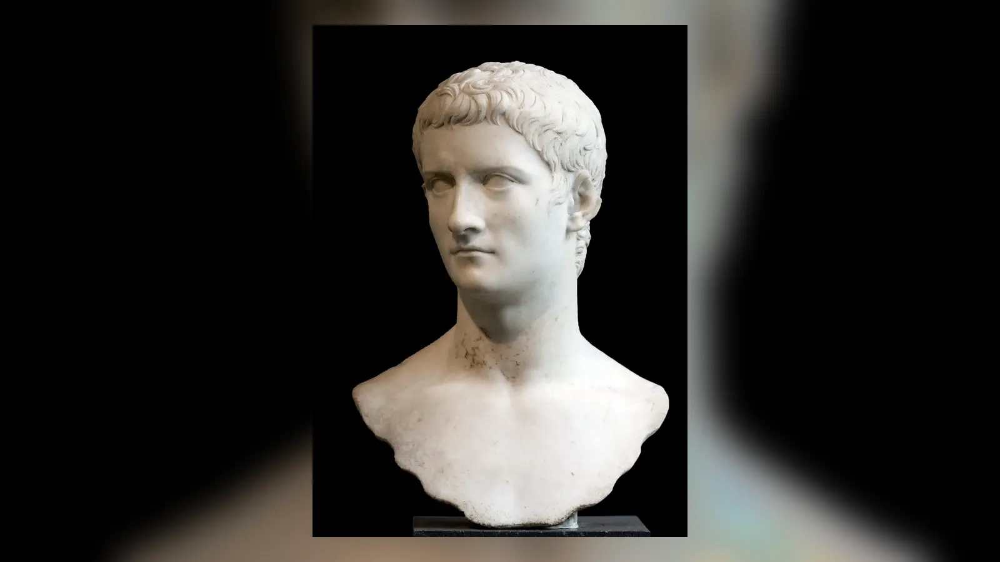
Roma TarihiCaligula gerçekten deli miydi, yoksa düşmanlarının ve sonraki yazarların kurduğu bir tiran portresi mi? Antik kaynaklar, tartışmalı hikâyeler ve siyasi gerçekler ışığında inceleyin.
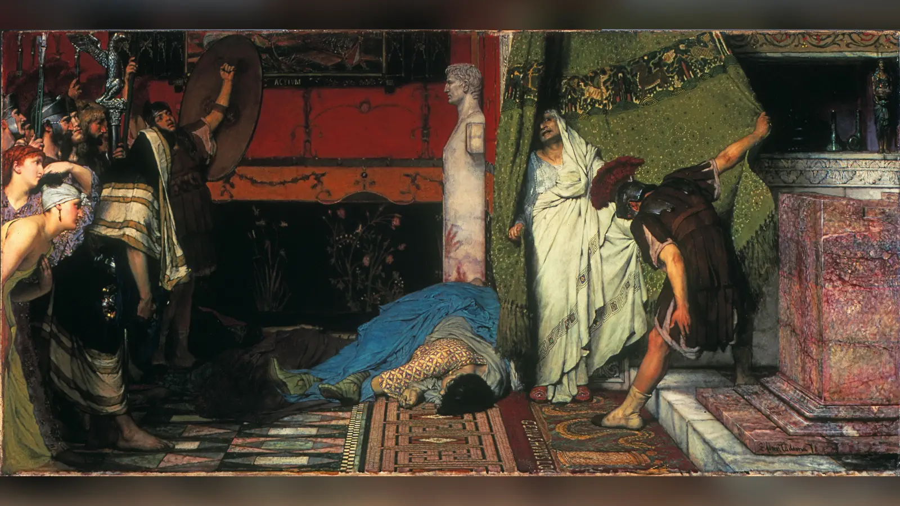
Roma TarihiRoma imparatorlarının sık sık suikast, darbe ve iç savaşla devrilmesinin ardında yalnız saray entrikaları yoktu. Veraset belirsizliği, ordular ve meşruiyet krizleri iktidarı neden ölümcül hâle getiriyordu?
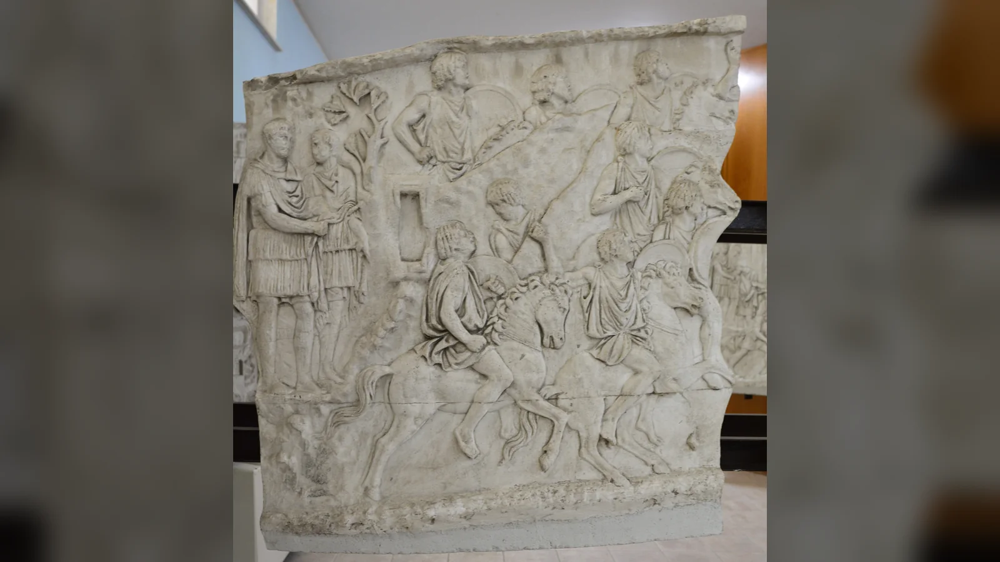
Roma TarihiRoma lejyonlarını güçlü yapan yalnız disiplin ve silah değildi. İnsan gücü, lojistik, mühendislik, müttefikler ve değişime uyum Roma'nın askerî başarısını nasıl kurdu?
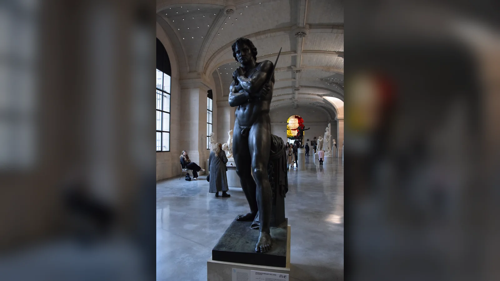
Roma TarihiCapua'dan kaçan birkaç düzine gladyatör Roma ordularını nasıl yenmeye başladı? Spartaküs'ün gerçek yaşamını, Üçüncü Köle Savaşı'nı ve efsanelerin ardındaki kanıtları keşfedin.
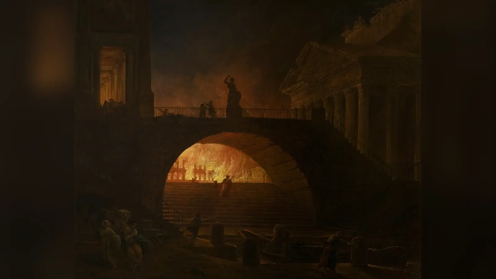
Roma TarihiNeron Roma’yı gerçekten yaktı mı? MS 64 Büyük Roma Yangını’nın nedeni, keman efsanesi, Domus Aurea ve antik kaynakların sunduğu çelişkili kanıtları keşfedin.
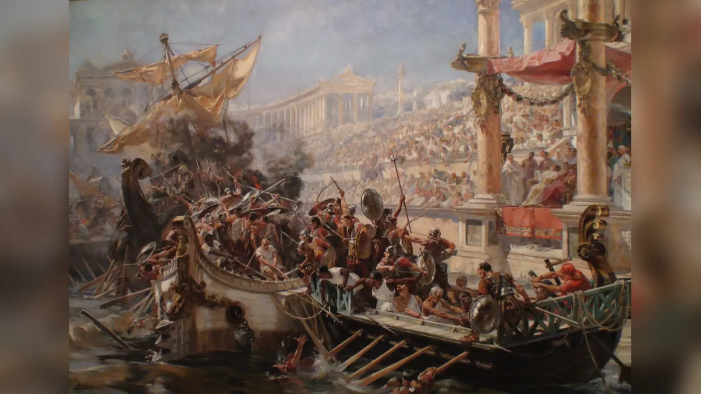
Roma TarihiAntik yazarlar Kolezyum'un ilk yıllarında su, gemiler ve sıra dışı gösterilerden söz ediyor. Peki arena gerçekten bir denize çevrildi mi? Antik anlatılar, arkeolojik bulgular ve Roma mühendisliği bu ünlü gösterilerin gerçekte nasıl yapılmış olabileceğini bütün yönleriyle ortaya koyuyor.
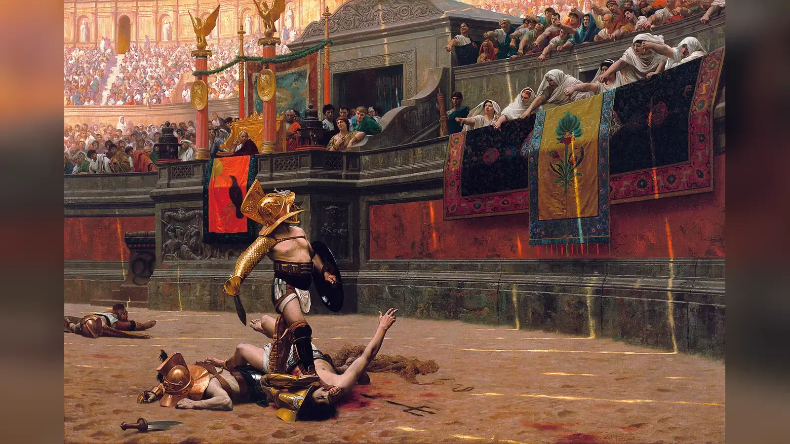
Roma TarihiRoma gladyatörlerinin hayatı yalnızca arenadaki birkaç dakikadan ibaret değildi. Eğitimden beslenmeye, sağlık bakımından özgürlük ihtimaline kadar arenanın arkasındaki gerçek yaşamı keşfedin.
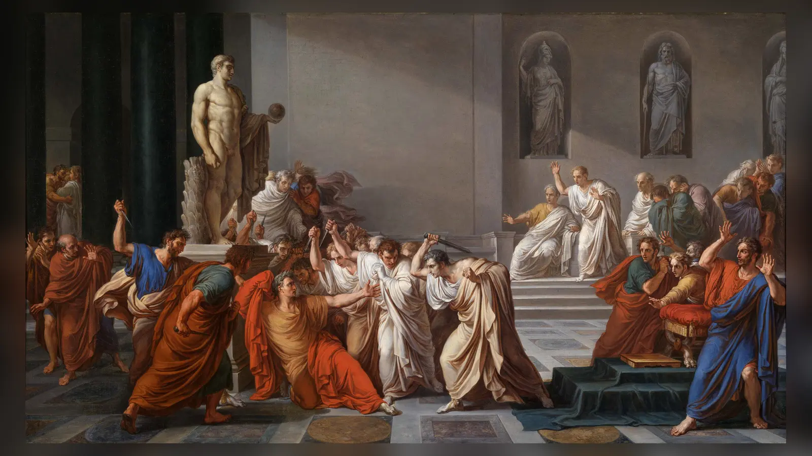
Roma TarihiÖmür boyu diktatörlük, krallık korkusu, Cumhuriyetçi idealler ve kişisel hesaplar Roma’nın en ünlü suikastında nasıl birleşti?
Dalí’nin yumuşayan saatlerini; zaman, bellek, rüya ve çürüme hakkındaki tartışmalı yorumlarla birlikte inceleyin.
Çocuk firavunun yaşamını, tartışmalı ölümünü, KV62 mezarını ve dünyaya yayılan lanet efsanesini kanıtlarla keşfedin.
Neolitik devrim anlatısını sorgulatan Göbekli Tepe keşfini ve yapılar hakkındaki güncel arkeolojik tartışmaları inceleyin.
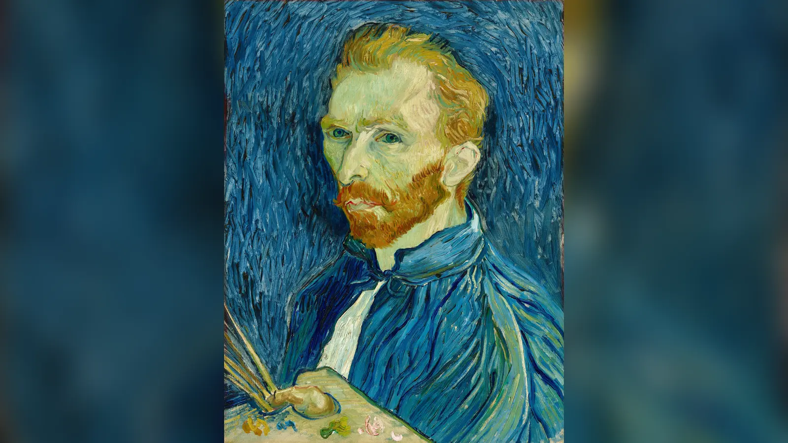
Sanat TarihiVan Gogh’un son iki gününü, tarihsel kanıtları ve René Secrétan bağlantılı alternatif ölüm teorisini inceleyin.
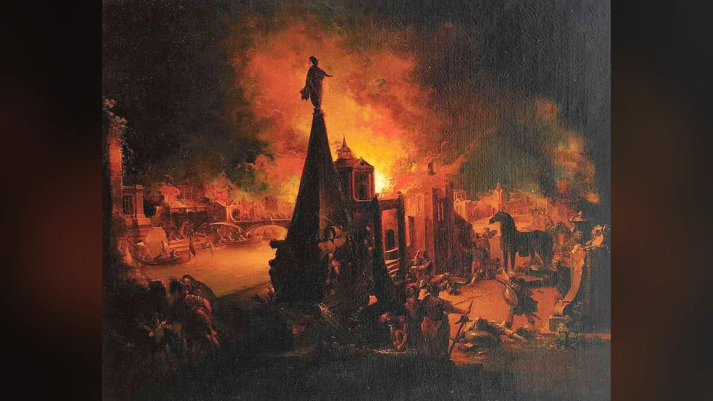
Antik TarihHomeros’un destanından Hisarlık kazılarına uzanan Truva Savaşı’nın efsanesini ve tarihsel gerçeklik tartışmasını keşfedin.
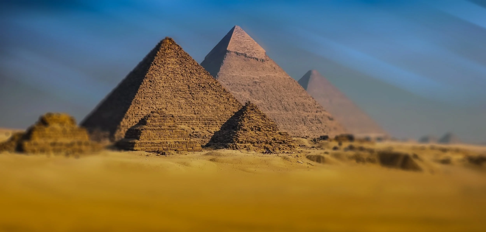
Antik MısırTaş blokların taşınmasını, rampa teorilerini, işçi yerleşimlerini ve antik mühendisliğin çözülemeyen ayrıntılarını inceleyin.
 Yunan Mitolojisi
Yunan MitolojisiMedusa’nın erken Yunan kaynaklarından Ovidius’un dönüşüm anlatısına uzanan değişken ve çarpıcı hikâyesini keşfedin.
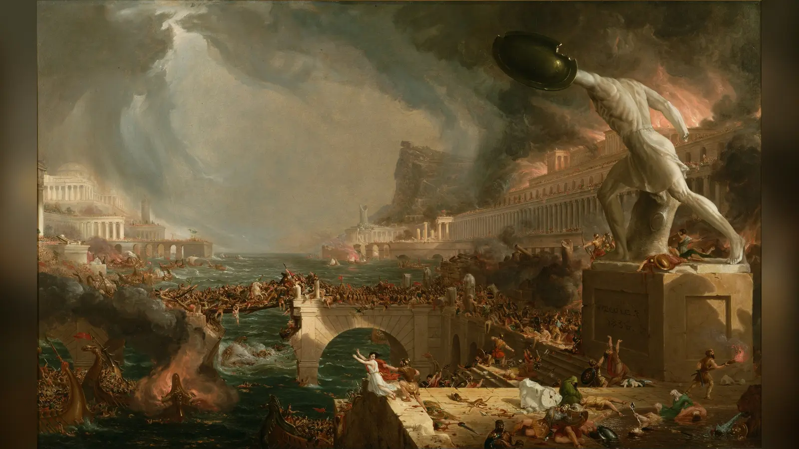
Roma Tarihiİç savaşlar, vergi kayıpları, ordunun finansman sorunları, göçler ve askerî darbeler Batı Roma’yı nasıl çökertti?